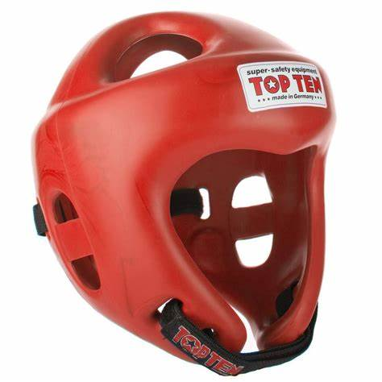
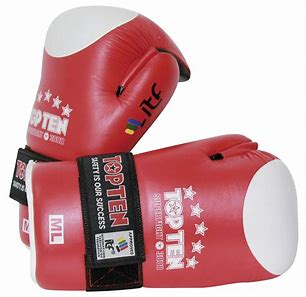
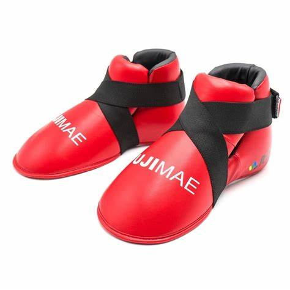

TORNEO DE TAEKWONDO ITF

international taekwondo federartion headquarters Bolivia
jaguares kwan itf La Paz-Bolivia
la escuela de Taekwon-Do itf jaguares kwan le invita a ser parte del torneo que sse realizara el dia 12 de noviembre de 2023 en instalaciones del colegio Dr. Martin Cardenas zona de auquisamaña calle A a horas 08:30am.
La Federación Internacional de Taekwon-Do (en inglés International Taekwon-Do Federation, o ITF) es la federación internacional encargada de regular y reglamentar las prácticas marciales y profesionales del Taekwon-Do, fundada el 22 de marzo de 1966.
El TaeKwon-Do es un arte marcial moderno de origen coreano desarrollado en el siglo xx por el Gran Maestro General coreano Choi Hong Hi. Se destaca por la variedad de sus técnicas de defensas y ataques usando los pies y manos sin armas, actualmente es una de las artes marciales más conocidas. Se basa fundamentalmente en artes marciales mucho más antiguas como el taekkyon y el hwa rang do coreanos y el karate-do japonés.
fuuente wikipedialas competencias organizadas por esta federacion se cumplen un tipo de normas las cuales han sido revisadas por la federacion las reglas son:
Pueden participar todos los competidores de los clubes que hayan solicitasdo previa y formalmente participar a la vez deben de estar acreditados en tiempo y forma y bajo las reglas y regulaciones.
08:30hrs.-Autoridades,jueces y arbitros
09:00hrs.-ceremonia de apertura:competidores coachs e instructores
por competidor.........Bs80.-
publico por dia........Bs5.-
combate indivial modalidad combate continuo
El propósito de este reglamento es elevar la calidad del TaekwonDo al calificar todos los aspectos, brindando una oportunidad equitativa y justa para todos los participantes, y así
puedan aplicar lo mejor de sus habilidades en una competencia amistosa entre ellos. El presente reglamento de competencia será aplicable para este evento CAMPEONATO DE TAEKWON-DO ITF HQ BOLIVIA 2023
A. Área de la cabeza en la parte delantera y los lados, pero no en la parte posterior.
B. Tronco del cuerpo desde el cuello hasta el ombligo verticalmente y desde una línea trazada desde la axila verticalmente hacia abajo hasta la cintura en cada lado (es decir, el área frontal solo excluye la e
En competición, una técnica es válida cuando:
A. se ejecuta correctamente
B. es dinámico, es decir, se entrega con fuerza, propósito, rapidez y precisión
C. está controlado en el objetivo
1 punto: golpe de puño dirigido al cuerpo o a la cara
2 puntos: patada dirigida al cuerpo
3 puntos: patada dirigida a la cara
Se añadira 1 punto cuando el golpe sea saltando
se añadira 1 punto cuando el golpe sea con un giro
atacar al oponente caido
golpe intencional a zonas no permitidas (como los genitales)
conducta antideportiva y/o irrespetuosa con los arbitros o el oponente
fingir una lesion
A. Mala conducta contra los oficiales o instrucciones
B. Cometer 3 faltas
C. Golpear a un oponente caido
D. Cualquier competidor sospechoso de estar bajo las influencias de bebidas alcoholicas y/o drogas
pantalon y saco azul
Dobok oficial ITF y/o escudos aprobados oficialmente por las autoridades del torneo ITF HQ BOLIVIA 2022 (se permite únicamente una remera blanca sin inscripciones debajo de la chaqueta)
1. Bota y guante protector (de cualquier color)
2. Protector de ingle (debe estar dentro de los pantalones)
3. Protector bucal transparente
4. Casco, será obligatorio ambos colores rojo y azul
5. Tobilleras/Canilleras
6. Protector de antebrazo
7. Protector de mama femenino (debe estar dentro del Dobok)
  Durante todo el campeonato se contará con la asistencia de personal cualificado en primeros auxilios y médico profesional capacitado
Se deben cumplir sus recomendaciones, con respecto a la participación adicional de los competidores, después de una lesión. Se contará con áreas debidamente sanitizadas, monitoreo de temperatura y sanitizacion personal en diferentes puntos de acceso, stands de hidratación y asesoría médica y sanitaria
| categorias de peso | |||
|---|---|---|---|
| masculino | femenino | ||
| minimosca | -45kg. | minimosca | -41kg. |
| mosca | 45-49kg. | mosca | 41-44kg. |
| gallo | 49-54kg. | gallo | 44-48kg. |
| pluma | 54-59kg. | pluma | 48-52kg. |
| ligero | 59-65kg. | ligero | 52-57kg. |
| super ligero | 65-71kg. | super ligero | 57-62kg. |
| medio | 71-78kg. | medio | 62-68kg. |
| pesado | +78kg. | pesado | +68kg. |
si ud. tiene alguna duda puedes contactarnos por estos links a nuestro WhatsApp y reddes sociales
link nuestro WhatsApp link a nuestro facebook link a nuestro instagram